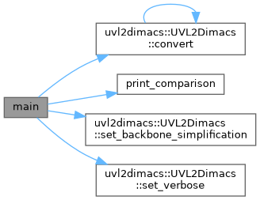

- Generated by
 1.9.8
1.9.8
|
UVL2Dimacs 1.0.0
High-performance UVL to DIMACS converter with backbone simplification
|
Advanced example showing batch conversion and comparison. More...
#include "uvl2dimacs/UVL2Dimacs.hh"#include <iostream>#include <vector>#include <chrono>#include <iomanip>Go to the source code of this file.
Classes | |
| struct | ConversionJob |
Functions | |
| void | print_comparison (const std::string &file, const uvl2dimacs::ConversionResult &straightforward, const uvl2dimacs::ConversionResult &tseitin) |
| int | main (int argc, char *argv[]) |
Advanced example showing batch conversion and comparison.
This example demonstrates:
Definition in file batch_convert.cc.
| int main | ( | int | argc, |
| char * | argv[] | ||
| ) |
Definition at line 59 of file batch_convert.cc.
References UVL2Dimacs::convert(), print_comparison(), UVL2Dimacs::set_backbone_simplification(), UVL2Dimacs::set_verbose(), uvl2dimacs::STRAIGHTFORWARD, and uvl2dimacs::TSEITIN.

| void print_comparison | ( | const std::string & | file, |
| const uvl2dimacs::ConversionResult & | straightforward, | ||
| const uvl2dimacs::ConversionResult & | tseitin | ||
| ) |
Definition at line 23 of file batch_convert.cc.
References ConversionResult::num_clauses, ConversionResult::num_features, ConversionResult::num_variables, and ConversionResult::success.
Referenced by main().